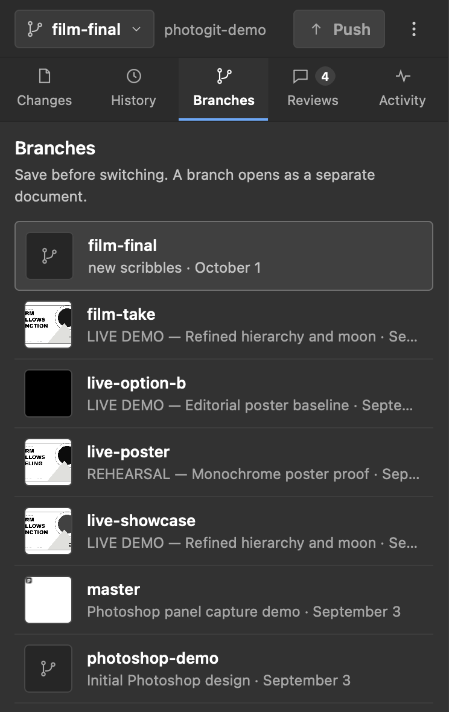

Layer-by-layer changes
See which layers were added, deleted or edited, down to pixels, text, opacity, blend mode and order.
Save every PSD version, see exactly what changed layer by layer, and branch your ideas without leaving Photoshop.
Sound familiar?
Designers have been versioning Photoshop work with “Save As” for thirty years. It eats disk space, hides what changed, and nobody remembers which copy the client approved. PhotoGit keeps one document and a complete, searchable history behind it, right in a Photoshop panel.
The panel
No new app to learn. PhotoGit is a panel next to Layers and History, and it remembers every version you choose to save.



Features
Everything developers love about version control, rebuilt around layers, pixels and PSDs.
See which layers were added, deleted or edited, down to pixels, text, opacity, blend mode and order.
Every version stores the full PSD, so you can always reopen precisely what you saved. Nothing is flattened or approximated.
Put any saved version beside your open document and see what moved before you commit to it.
Try a new direction on a branch and merge it back when the client picks it. Conflicting PSD edits are blocked, not silently overwritten.
Your artwork lives in a folder on your machine. Nothing is uploaded unless you push to a remote you choose.
Every version is an ordinary Git commit, so GitHub, backups and your team’s existing tools just work.
Get started
You need Node.js 22+, Git with Git LFS, Photoshop 2024 (v25) or later, and Adobe UXP Developer Tools. The terminal is only used once, for setup.
Clone the repository and build it.
git clone https://github.com/xingexu/photogit.git
cd photogit && npm ci && npm run buildPoint PhotoGit at a folder for your artwork and start the local helper.
npm run photogit -- init ~/Design/poster
npm run helper -- --approve-root ~/Design/posterLoad the plugin in UXP Developer Tools, then choose Plugins → PhotoGit in Photoshop and save your first version.
apps/photoshop-plugin/manifest.jsonFull walkthrough, pairing and troubleshooting in the setup guide.
Why PhotoGit
Most version-control tools for designers were built for Sketch or Figma. Photoshop files were left with “Save As”.
| Capability | “Save As” copies | Plain Git + LFS | PhotoGit |
|---|---|---|---|
| Reopen any exact past PSD | ✓ | ✓ | ✓ |
| See which layers changed | ✕ | ✕ | ✓ |
| Visual before / after compare | Manually | ✕ | ✓ |
| Branch ideas without duplicate files | ✕ | ✓ | ✓ |
| Works inside Photoshop | ✓ | ✕ | ✓ |
| No command line day to day | ✓ | ✕ | ✓ |
| Sync to GitHub or any Git remote | ✕ | ✓ | ✓ |
FAQ
Yes. PhotoGit is open source under the MIT license. There is no account, subscription or usage limit.
No. Day to day you scan, save, compare and branch from buttons in the panel. Git runs behind the scenes in a small local helper. You use the terminal once, to set up a project.
No. Versions are stored in a folder on your own computer. They only leave it if you choose to push to a Git remote such as GitHub.
The panel targets Photoshop 25 (2024) and later, and has been tested end to end on macOS with Photoshop 2026. Windows has not been verified yet. See the compatibility notes.
Yes, through branches. PhotoGit splits each document into per-layer data, so it can tell when edits overlap. Changes that conflict are flagged for a decision rather than blended automatically.
PhotoGit is an early 0.2 development build. It works, but keep independent backups of important artwork while it matures. Star or watch the repository to hear about releases.
Open source
PhotoGit is built in the open. A star helps more designers find it, and issues and pull requests shape what comes next.
MIT licensed · Made for designers who have lost work to “Save As”